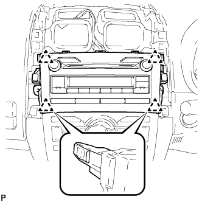

Radio Receiver Assembly Removal |
| 1. Remove Instrument Panel Finish Panel End RH |
 |
Apply protective tape to the positions shown in the illustration.
Insert a roof molding remover and move it near the clip engagement as shown in the illustration.
 |
As shown in the illustration, pull the roof molding remover with both hands in the direction of the arrow to disengage the clip.
 |
Disengage the 3 clips and remove the instrument panel finish panel end RH.
| 2. Remove Instrument Panel Finish Panel End LH |
 |
Apply protective tape to the positions shown in the illustration.
Insert a roof molding remover and move it near the clip engagement as shown in the illustration.
 |
As shown in the illustration, pull the roof molding remover with both hands in the direction of the arrow to disengage the clip.
Disengage the 3 clips and remove the instrument panel finish panel end LH.
| 3. Remove Instrument Panel Register Assembly CTR |
 |
Pull the instrument panel register assembly CTR horizontally toward the rear of the vehicle to disengage the 2 clips, 5 claws and 3 guides.
 |
Disconnect the connector and remove the instrument panel register assembly CTR.
| 4. Remove Radio Receiver Assembly w/ Bracket |
 |
Remove the 4 bolts.
 |
Disengage the 4 clips and pull the radio receiver assembly w/ bracket toward the rear of the vehicle.
Disconnect each connector and remove the radio receiver assembly w/ bracket.
| 5. Remove Radio Bracket NO.1 |
 |
Remove the 4 screws and radio bracket NO.1 from the radio receiver assembly.
| 6. Remove Radio Bracket NO.2 |
 |
Remove the 4 screws and radio bracket NO.2 from the radio receiver assembly.
| 7. Remove Radio Receiver Assembly |